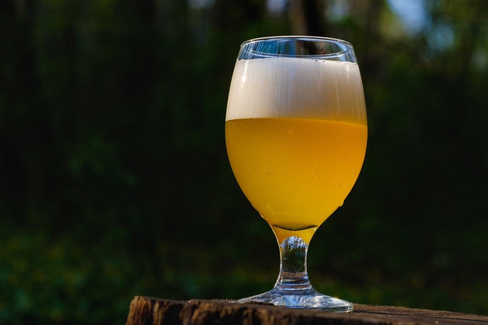

Hoppy Golden
As modernas Golden Ale foram desenvolvidas na Inglaterra para disputar e tomar o forte mercado das cervejas lager. Embora seja difícil identificar a primeira, Hop Back’s Summer Lightning, produzida pela primeira vez em 1986, é considerada por muitos como aquela que conseguiu dar o pontapé inicial ao estilo. Desde então surgiram muitas variações desse estilo, como a British Golden Ale, Belgian Golden Ale, Strong Golden Ale, etc.
Nós da Itabier gostamos de pensar na nossa Hoppy Golden como uma Heineken modificada, mais poderosa, com aquele toque da levedura ale e o lúpulo mais pronunciado.
Ela é uma cerveja leve de cor palha a dourado e espuma branca de moderada formação. Pouco ou nenhum aroma de malte, deixando o papel principal para o blend de lúpulos. Particularmente mesclamos um lúpulo alemão nobre, mais delicado, com um lúpulo americano mais pungente, deixando um aroma frutal.
Amargor e sabor suave de lúpulo, também frutal com um pouco de especiarias e um toque de ésteres da levedura. É servida mais gelada que as Bitters tradicionais, este estilo foi originalmente posicionado como uma cerveja refrescante de verão, mas agora é frequentemente produzida durante todo o ano.
TELEBIER
Entregamos somente para a região de Torres e suas cercanias.
Click nos números abaixo e fale diretamente pelo whatsapp com Diego ou Cristiano, obrigado!
“Vender uma cerveja ruim é um crime contra o amor cristão.” – 13ª lei da Cidade de Augsburg